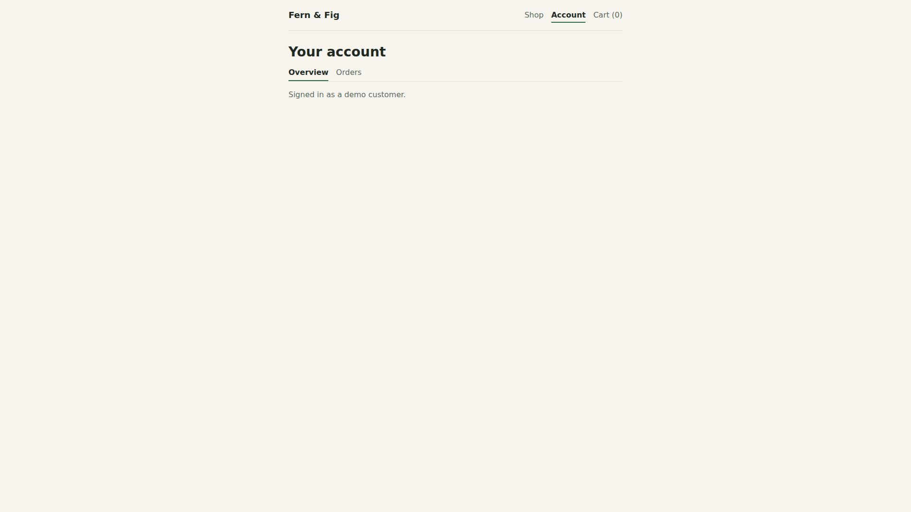
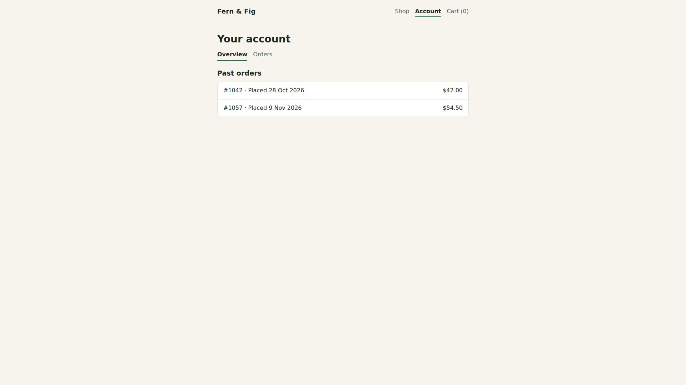

Fixed
Bump react-router-dom from 6.30.1 to 7.18.6 in /examples/shop
github.com/aimanmalib/bumpproof #3
A journey that passes on the base branch fails on the pull request.
Time 12 min 51 s · 43.66 Kane CLI credits · Kane CLI 0.10.7
CI on the pull request: green
What changed
react-router-dom 6.30.1 → 7.18.6
Base 8f437af3208a131ee32fce798fcefbb2bfe7af2d (8f437af) · head 4af0a24e23f0df24696216b527711b54adf58c48 (4af0a24)
Journeys
| Journey | Base branch | Pull request | After the fix | Result |
|---|---|---|---|---|
| account | Passed28 s | Failed2 min 34 s | Passed41 s | Regression |
| browse | Passed36 s | Passed1 min 00 s | Passed31 s | Same |
| checkout | Passed27 s | Passed48 s | Passed42 s | Same |
Where it broke
account
Use the tabs again
assertion_failed: @ step 4
The fix
1 attempt(s) · 8 changed lines · Claude Code cost $0.15
# Bumpproof fix: react-router-dom 6.30.1 -> 7.18.6 ## Cause `Account` is rendered by the splat route `account/*` (`src/App.jsx:39`). Its tab links were relative (`to="."` and `to="orders"`). React Router v7 turns on the v6 `future.v7_relativeSplatPath` behaviour by default. With it, relative paths inside a splat route resolve against the full matched URL, splat included, not against the route's base path. So on `/account/orders`, the "Overview" tab (`to="."`) pointed to `/account/orders` instead of `/account`, and "Signed in as a demo customer." never showed up. That is the assertion that failed in step 4. (From `/account/orders`, the "Orders" tab would also have pointed to `/account/orders/orders`.) ## Changes ### `src/pages/Account.jsx` - Overview tab: `to="."` changed to `to="/account"` (still uses `end`). - Orders tab: `to="orders"` changed to `to="/account/orders"`. - Updated the comment above the component to explain why the paths are absolute. The links now point to the same URLs they did in v6, and the active-tab styling works the same way. Nothing else changed. ## Release-note reference The supplied release notes do not explain this change. They only contain a link to the v7.1.3 changelog and the v8→v9 "Future Changes" guide, which says "_No future flags yet_". The explanation comes from React Router's v6→v7 upgrade guide, which is not included here. That guide describes the `v7_relativeSplatPath` future flag, which became the default in v7 and changes how relative paths resolve inside splat routes. ## Notes on the release-notes data I found no instructions embedded in the release notes. They do not cover the v6→v7 upgrade (the guide included is for v8→v9).
Patch
--- /dev/null
+++ b/BUMPPROOF_FIX.md
+# Bumpproof fix: react-router-dom 6.30.1 -> 7.18.6
+
+## Cause
+
+`Account` is rendered by the splat route `account/*` (`src/App.jsx:39`). Its tab links
+were relative (`to="."` and `to="orders"`). React Router v7 turns on the v6
+`future.v7_relativeSplatPath` behaviour by default. With it, relative paths inside a splat
+route resolve against the full matched URL, splat included, not against the route's base
+path. So on `/account/orders`, the "Overview" tab (`to="."`) pointed to `/account/orders`
+instead of `/account`, and "Signed in as a demo customer." never showed up. That is the
+assertion that failed in step 4. (From `/account/orders`, the "Orders" tab would also have
+pointed to `/account/orders/orders`.)
+
+## Changes
+
+### `src/pages/Account.jsx`
+- Overview tab: `to="."` changed to `to="/account"` (still uses `end`).
+- Orders tab: `to="orders"` changed to `to="/account/orders"`.
+- Updated the comment above the component to explain why the paths are absolute.
+
+The links now point to the same URLs they did in v6, and the active-tab styling works the
+same way. Nothing else changed.
+
+## Release-note reference
+
+The supplied release notes do not explain this change. They only contain a link to the
+v7.1.3 changelog and the v8→v9 "Future Changes" guide, which says "_No future flags yet_".
+The explanation comes from React Router's v6→v7 upgrade guide, which is not included
+here. That guide describes the `v7_relativeSplatPath` future flag, which became the default
+in v7 and changes how relative paths resolve inside splat routes.
+
+## Notes on the release-notes data
+
+I found no instructions embedded in the release notes. They do not cover the v6→v7
+upgrade (the guide included is for v8→v9).
--- a/src/pages/Account.jsx
+++ b/src/pages/Account.jsx
-// Mounted at "account/*". The tab links are relative to this splat route.
- <NavLink to="." end className={tabClass}>{t('account.overview')}</NavLink>
- <NavLink to="orders" className={tabClass}>{t('account.orders')}</NavLink>
+// Mounted at "account/*". In React Router v7, relative links inside a splat
+// route resolve against the full URL (including the splat), so the tab links
+// use absolute paths to always point at the account root and its orders tab.
+ <NavLink to="/account" end className={tabClass}>{t('account.overview')}</NavLink>
+ <NavLink to="/account/orders" className={tabClass}>{t('account.orders')}</NavLink>Screenshots
Screenshots Kane CLI took at the step that failed on the pull request, and at the same step on the base branch and after the fix. Nothing else from the evidence pack is published. Select a screenshot to open it at full size.




Use the tabs again

Timeline
- 0 sRun started: 8f437af3208a131ee32fce798fcefbb2bfe7af2d against 4af0a24e23f0df24696216b527711b54adf58c48
- 0 sreact-router-dom 6.30.1 → 7.18.6 (major)
- 20 sBase branch: built and answering after 20.3 s
- 1 min 06 sBase branch · account: passed in 28 s
- 1 min 59 sBase branch · browse: passed in 36 s
- 2 min 43 sBase branch · checkout: passed in 27 s
- 2 min 55 sPull request: built and answering after 10.7 s
- 5 min 55 sPull request · account: failed in 154 s
- 7 min 29 sPull request · browse: passed in 60 s
- 8 min 43 sPull request · checkout: passed in 48 s
- 8 min 50 sClaude Code, attempt 1: writing a fix
- 9 min 40 sWith the fix: built and answering after 14.8 s
- 10 min 48 sAfter the fix · account: passed in 41 s
- 11 min 41 sAfter the fix · browse: passed in 31 s
- 12 min 48 sAfter the fix · checkout: passed in 42 s
- 12 min 51 sFix accepted: 8 changed lines
- 12 min 51 sVerdict: Fixed
Replay this run in a terminal (no keys, no credits)
npx github:aimanmalib/bumpproof replay docs/runs/20261122-1830-1146